단 ‘ 7% ’ 만 생산되는스페셜티를 선택하는 시대!
커피를 즐기는 고객의 취향은 점점 다양해지고 고급화 되어 가고 있습니다.
셀렉토커피는 농장에서 직접 원두를 유통해 상위 7% 스페셜티 원두를
블렌딩하여 합리적인 가격에 제공합니다.
모든 고객이 언제, 어디서나 남다른 맛과 풍미의 스페셜티를
즐길 수 있도록 최고의 커피 전문가 모두가 노력하고 있습니다.
스페셜티 아메리카노 셀렉트샵,
셀렉토커피!
SELECTO COFFEE는 전 세계 커피 생산량의 7%만 생산되는
최고급 스페셜티커피 원두를 최적의 로스팅 포인트와
최적의 추출로 고객의 취향과 입맛에 맞는 5가지 스페셜티 커피를
경험 할 수 있는 특별한 공간 입니다.